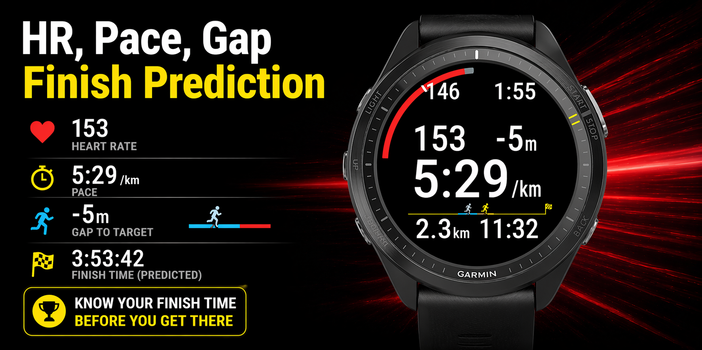

心拍・ペースを見るアプリ
フルマラソン中に、今の心拍・ペース・目標との差を確認するためのGarminアプリです。

表示する情報
- 現在の心拍
- 心拍の上限目安
- 現在のペース
- 目標との差
- 予測ゴールタイム
RaceNaviは、Garmin向けの個人開発アプリです。 目的の違う2つのアプリを開発しています。
フルマラソン中に、今の心拍・ペース・目標との差を確認するためのGarminアプリです。

マラソン中に、次の関門とエイドを確認するためのGarminアプリです。